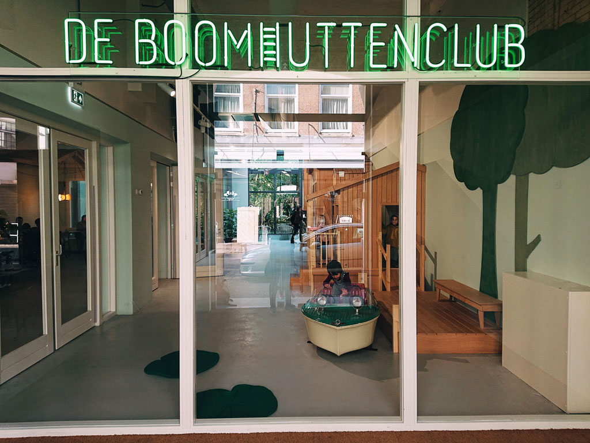
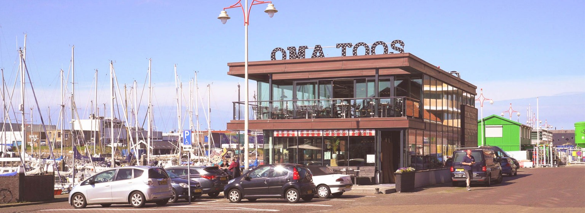
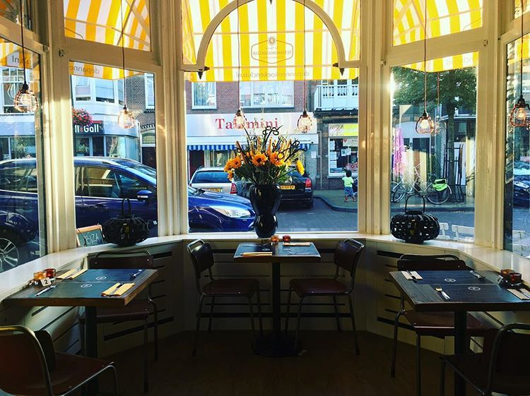

De leukste kindvriendelijke restaurants in Den Haag
Met de kids uit eten in Den Haag? Of gewoon even koffie drinken? Check hier onze tips voor kinderrestaurants, lunchplek, borreladresjes en kindvriendelijke restaurants met kindermenu, speeltuin, kinderhoek, speelhoek, kindervermaak of een fijn terras in en om Den Haag!
Check hieronder 11 x leuke kindvriendelijke plekken in Den haag
DE BOOMHUTTENCLUB
De Boomhuttenclub bevindt zich in de boekhorststraat net buiten het Haagse centrum. Kinderen vinden dit een speelparadijs doordat er een speeltuin aanwezig is in het pand. Je kunt er terecht voor ontbijt en lunch. Elke dag van de week zijn zij open, behalve op dinsdagen. Vanaf 9:00 ben je welkom! Adres: Boekhorststraat 47, Den haag
PLUK DEN HAAG
Pluk! Den Haag ligt verscholen in het groen van recreatiegebied Madestein, tussen de Uithof en Kijkduin. Het is even zoeken als je voor het eerst komt, maar dat is juist leuk. Als je het eenmaal gevonden hebt stap je zo uit de stad het platteland op. Er is een kleine kinderboederij waar je dieren kunt aaien. Je kan er ook een partijtje geven! In de pluktuin kunnen kinderen (maar ook jij als volwassene) zelf fruit plukken. Daarnaast is er nog een lunchroom waar er taartjes en daghappen wordt voorgeschoteld. Zowel buiten als binnen kunnen de kinderen heerlijk spelen als jij je koffie drinkt. Elke dag kan je op bezoek bij Pluk! tussen 10:00 en 17:00. Adres: Loosduinse Hoofdstraat 1184a, Den haag
ANNE&MAX
Niet één, twéé maar drie vestigingen van Anne&Max zijn er in Den Haag te vinden. In de Fahrenheitstraat, De Frederik Hendriklaan en in het centrum tegenover de grote kerk. Anne&Max voelt als een huiskame waar gasten zich op elk moment van de dag thuis voelen. In de loungestoelen verdwijn je met een goed boek of de krant van die dag. Aan de leestafel is ruimte om een spelletje te spelen. De tuinkamer is een oase van rust. Bij de tafels aan het raam kun je heerlijk mensen kijken en op de banken klets je bij onder het genot van een kop koffie. Adres: Fahrenheitstraat 472, Den haag Adres: Frederik Hendriklaan 166, Den haag Adres: Kerkplein 45, Den haag
BAGELS & BEANS
In deze vestiging van Bagel & Beans kan je een mooie speelhoek vinden achterin de zaak. Je kan je peuter makkelijk in de gaten houden doordat er zitplaatsen zijn die naast de speelhoek zijn. Adres: Aert van der Goesstraat 2, Den haag
YOGHURT BARN DEN HAAG
In het mooie centrum van Den Haag bevindt zich de Yoghurt Barn. Er is een speciale kinderhoek waar je fijn kan zitten. Hier kan je van yoghurt genieten die een chef voor je maakt, of je kan los gaan door je eigen toppings te kiezen. Naast yoghurt is er ook koffie, thee en gebak. Adres: Plaats 25, Den haag
HARTBEACH SURFRESTAURANT
Hier kan je lekker ontbijten, lunchen en dineren. Er is plek op een zonnig terras aan Scheveningen. In de keuken staat "The surfing Chef" die soms nog net niet in zijn wesuit in de keuken staat. In dit idylische surfrestaurant kan je het gehele jaar door terecht. Adres: Strandweg 3, Den haag

Bron: Hartbeach.nl
STRANDPAVILJOEN ZUID
Met speelgoed en trampolines aanwezig is dit een heus paradijs voor beide ouders al kinderen op het mooie Zuiderstrand. Strandpaviljoen Zuid is een relaxte plek in Den Haag. Op drukke dagen is het hier vaak rustiger dan in Scheveningen. Zoek je een fijne plek waar je kind vrij kan spelen, kom dan zeker naar strandpaviljoen Zuid. Adres: Zuiderstrand 3, Strandslag 11, Den Haag
STRANDCLUB WIJ
Op het strand van Scheveningen kan je strandclub Wij vinden voor een uitgebreid ontbijtbuffet. Deze is er welke zondagochtend. Daarnaast is er ook een speeltuin aanwezig. Adres: Strandweg 1, Scheveningen
OMA TOOS
Oma Toos is een oer-Hollands concept waar je samen met je kids kunt genieten van de heerlijkste pannenkoeken, poffertjes en wafels. Bovendien kunnen ze zich voor, tijdens en na het eten prima uitleven in de speelhoek. Ben je niet van de pannenkoeken? Er staan ook lunch-, voor- en hoofdgerechten op de kaart als broodjes, kroketten, stamppot, burger, vispannetje en salades! Op en top Hollands eten, van oma Toos natuurlijk! Naast een heerlijke plek in het restaurant, kun je ook nog eens lekker hapjes en drankjes doen op het zonneterras met een prachtig uitzicht op de jachthaven van Scheveningen. Heel belangrijk ook om te weten: kinderen mogen na afloop altijd een cadeautje grabbelen! Adres: Dr. Lelykade 3r, Den haag
Bron: Omatoos.nl
HOWDY'S PANNENKOEKEN SALOON
Zoals de naam al doet vermoeden, is dit restaurant in het decor van een stadje uit het wilde westen. Cowboys en cowgirls doen hun lol op in de speelmogelijkheden van Howdy's kids place. Elk weekend is namelijk ook nog eens 'Howdy Time'. Hier komt Mascotte Howdy dan langs, en laat hij zijn dansmoves zien! Het restaurant is te vinden aan de directe afslag van de A12 en je kan gratis parkeren voor de deur. Adres: Gildeweg 2, Nootdorp
DE PANNENKOEKEN CLUB
Hoe kan het dan ook anders dan er nóg een pannenkoeken restaurant in het lijstje zit. Voor een wat knussere ervaring in Rijswijk moet je bij de Pannenkoeken Club zijn. De Pannenkoeken Club is een sfeervol restaurant waar kwaliteit en aandach t voor de gasten voorop staat. Van Woensdag tot en met Zondag zijn zij geopend. Doordeweeks van 16:00 tot 21:00, en in het weekend vanaf 12:00 tot 21:00. Adres: Willemstraat 5, Rijswijk
Bron: instagram.com/depannenkoekenclub
MINGLEMUSH
Om deze grote indoor hall vol met restaurantjes en cafétjes, is er ook een gamehall aanwezig. MingleMush is naast Centraal Station en er is voor ieder wat wils met 15 verschillende foodstands en een enorme bar. Er kan alleen gepind worden bij MingleMush. Adres: Anna van Buerenplein 712, Den haag
DE BIJENKORF
In dit grote warenhuis in het centrum kan je terecht als je een magnetron nodig hebt voor een flesje melk, of een maaltijd wilt maken voor je kleine. Dit is namelijk geen probleem, en er zijn genoeg kinderstoelen aanwezig. Er is ook een kleine kinderhoek aanwezig waar er een tv aan staat met cartoons en een tafeltje met wat speelgoed. Voor een heel jong kind heb je niet veel vermaak, maar het is wel voldoende om eventjes tot rust te komen. Adres: Wagenstraat 32, Den haag